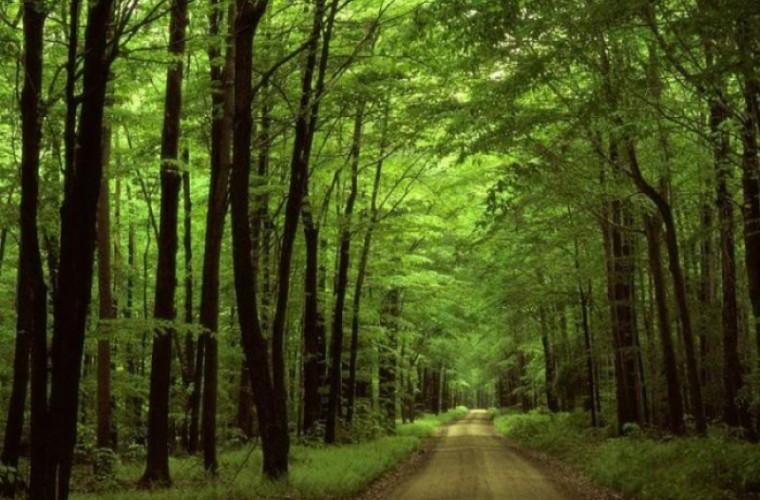
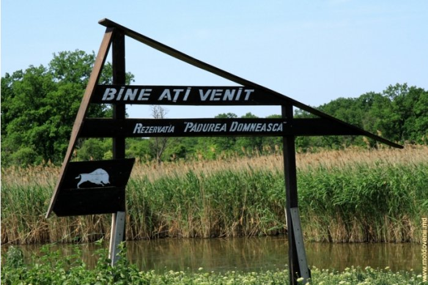
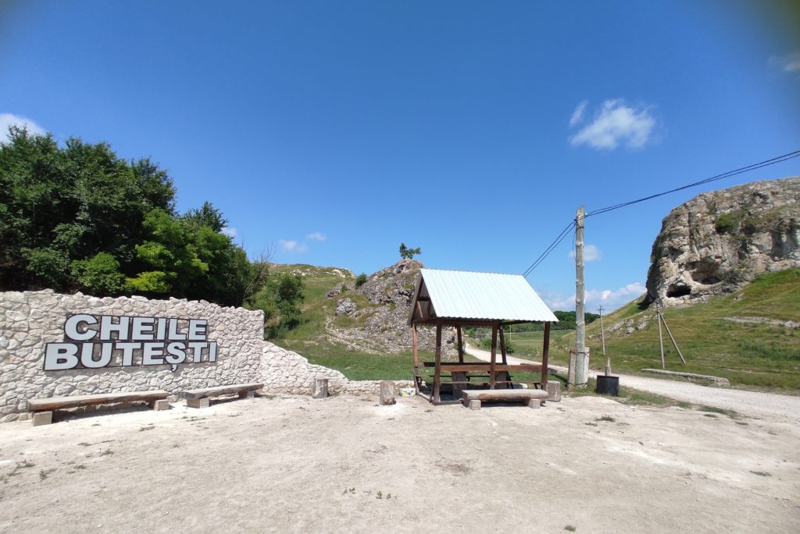
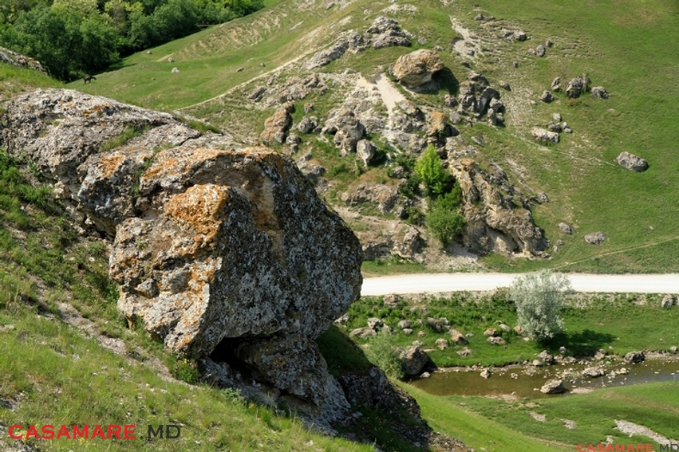
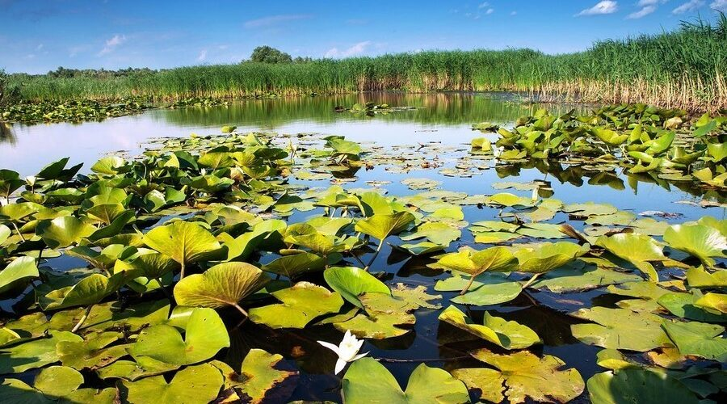

Rezervații naturale din Republica Moldova
IAGORLÂC

Râul Iagorlâc (de la turcescul eğrilik – curbură, un râu șerpuit) este un afluent de stânga al fluviului Nistru, care curge prin Ucraina și Republica Moldova. Izvorăște de pe versanții sudici ai Podișului Podoliei, la est de satul ucrainean Slobidka, și se revarsă pe malul stâng al fluviului la kilometru 371 de la gura de vărsare, lângă satul Goian. Mai mult
CODRII
Codrul (plural Codrii Moldovei) constituie un masiv forestier amplasat în centrul deluros al Republicii Moldova, pe Podișul Moldovei Centrale, ocupând cca. 40% din suprafața acestui platou înalt. Pădurile ocupă preponderent altitudinile maxime, dintre 200 și 430 m (dealul Bălănești). Mai mult
PĂDUREA DOMNEASCĂ
Rezervația naturală Pădurea Domnească este o arie protejată din Republica Moldova, ce se află de-a lungul Prutului, în vestul raioanelor Glodeni și Fălești și a fost fondată în anul 1993. Rezervația este situată în zona localităților Cobani, Balatina, Bisericani, Cuhnești, Moara Domnească din raionul Glodeni și Chetriș, Călinelști, Hâncești, Drujineni și Pruteni din raionul Fălești. Din punct de vedere geografic rezervația este așezată în lunca inundabilă a Prutului, între râul Prut și Camenca. Mai mult
CHEILE BUTEȘTI
Cheile Butești, cunoscute și sub denumirea Defileul sau Reciful Butești, sunt un monument al naturii de tip geologic sau paleontologic în raionul Glodeni, Republica Moldova. Aria protejată este amplasată la sud-est de satul Butești. Ocupă o suprafață de 110 ha, sau 96 ha conform unor măsurări mai recente.[5] Obiectul este administrat de Primăria comunei Camenca (24,15 ha) și Primăria satului Butești (32,27 ha). Mai mult
TOLTRELE PRUTULUI
oltrele Prutului (sau Stâncile Prutului) sunt un lanț de formațiuni calcaroase de tip recif, rispite pe o distanță de circa 200 km de-a lungul Prutului de Mijloc, în Republica Moldova. Încep din apropiere de Criva, în zona graniței de nord a țării și continuă până la Cobani, 200 km mai la sud. Câteva din ele sunt declarate monumente ale naturii și sunt protejate prin lege. Aceste lanțuri de recifi calcaroși sunt constituite din fosile de corali, moluște, scoici, alge calcaroase și alte organisme marine, care populau mările tropicale Tortoniană și Sarmatică acum 10-20 milioane de ani. Mai mult
LACUL BELEU
Lacul Beleu este un lac natural situat în rezervația științifică a Prutului de jos din lunca Prutului, în sudul Republicii Moldova (raionul Cahul). În Beleu se întâlnesc peste 20 de specii de pești, inclusiv plătica-de-Dunăre, bibanul-soare, țigănușul-bătrân, crapul, șalăul, văduvița ș.a. Lacul Beleu face parte din Rezervația naturală Prutul de Jos. Mai mult